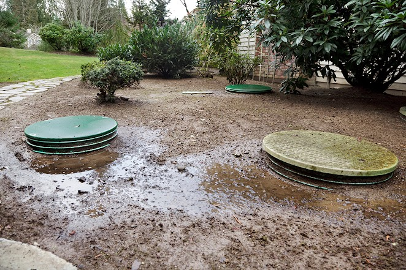

A team of 14 scientists from a prestigious university in US are behind a flushing trick that breaks down and eliminates all organic sludge from septic tanks, including natural oils, grease and organic hydrocarbons, and prevents back-ups, clogs, including corrosion.
Plus it eliminates all smells in just 3 days!
Over 21,374 septic tank owners have been using this trick and they are now saving close to $500 a year because they don't need to have their septic tank pumped anymore.
And before we'll reveal this newly discovered flushing trick, please answer the simple questions below to see if it can work for your septic tank as well!